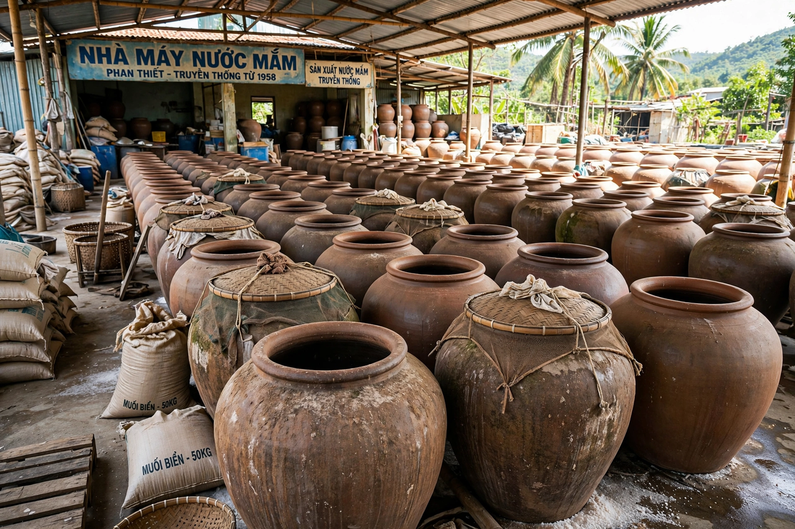

Fish sauce is a liquid condiment made from fish or krill that have been coated in salt and fermented for up to two years. It is used as a staple seasoning in East and Southeast Asian cooking, much as soy sauce is used in the region, and imparts a strong savoury (umami) flavour.
Fermented fish products have been made since antiquity. The Roman condiment garum, and its thinner by-product liquamen, were produced across the Mediterranean world from fermented fish intestines and blood. In Asia, fish fermentation developed early in China and spread throughout Southeast Asia, where it remains central to the cuisines of Vietnam, Thailand, Cambodia, the Philippines and Korea.
Small fish, most often anchovies, are mixed with sea salt — typically about three parts fish to one part salt — and packed into large earthenware or wooden vats. Over months of fermentation, enzymes from the fish and halophilic bacteria break down the flesh, producing an amber liquid rich in amino acids. The first pressing yields premium sauce; lower grades are made by re-soaking the fish solids. Quality is graded by nitrogen content and, in Vietnam, by degrees of protein (độ đạm).
Fish sauce is used both during cooking and as a table condiment, often mixed with lime juice, sugar, garlic and chillies in dipping sauces such as Vietnamese nước chấm. It is valued as a source of umami and can substitute for salt in many dishes.